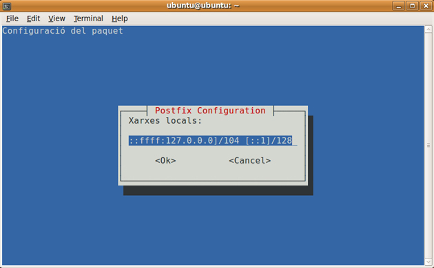

1. Instal·lació de Postfix
A l’hora d’instal·lar el programari, haurem d’accedir al terminal mitjançant l’accés a l’opció Aplicacions/Accessoris per executar la instal·lació amb les ordres sudo aptitude install postfix.
2. Configuració bàsica del Postfix
Arribats en aquest punt ja podrem començar a establir la configuració bàsica del programari Postfix mitjançant l’execució de les ordres sudo dpkg-reconfigure postfix.
Posteriorment, a l’hora de definir el tipus de configuració del correu, escollirem l’opció lloc web i com a nom del correu del sistema optarem per server1.exemple.com.
Un cop haguem definit el nom del correu del sistema, ja podrem definir el destinatari del correu de root i postmaster. En aquest cas, podem introduir el nostre nom. En el cas de la resta de destinacions per a les quals s’accepten correus electrònics (no hem de descartar la possibilitat de deixar-ho en blanc) podem definir-les com a server1.exemple.com, exemple.com, localhost.exemple.com, localhost.
Respecte de la possibilitat de forçar les actualitzacions síncrones a la cua de correu, és preferible que no es faci, atès que això pot alentir notablement el processament dels correus electrònics.
En el cas de les xarxes locals, optarem per l’adreça 127.0.0.0/8. Paral·lelament, des del punt de vista del límit màxim de la bústia en l’ordre de bytes, optarem pel valor zero per definir en el programa perquè no hi hagi cap mena de límit.

El caràcter que utilitzarem per definir l’extensió de les adreces locals serà +.
Respecte dels protocols d’Internet que utilitzarem, aquests seran tant l’IPv6 com l’IPv4.
3. Configuració del mailbox
Arribats en aquest punt, haurem de configurar el format de mailbox a Maildir.
sudo postconf -e ‘home_mailbox = Maildir/'
sudo postconf -e ‘mailbox_command ='
4. Configuració del Postfix perquè utilitzi l’SMTP AUTH amb SASL
Hem de configurar el programari Postfix perquè utilitzi SMTP AUTH amb SASL (saslauthd) mitjançant l’execució d’un ventall d’ordres.
sudo postconf -e ‘smtpd_sasl_local_domain ='
sudo postconf -e ‘smtpd_sasl_auth_enable = yes’
sudo postconf -e ‘smtpd_sasl_security_options = noanonymous’
sudo postconf -e ‘broken_sasl_auth_clients = yes’
sudo postconf -e ‘smtpd_recipient_restrictions = permit_sasl_authenticated,permit_mynetworks,reject_unauth_destination’
sudo postconf -e ‘inet_interfaces = all’
Afegirem l’usuari postfix al grup salsl mitjançant l’execució de l’ordre sudo adduser postfix sasl
D’altra banda, editarem l’arxiu /etc/postfix/sasl/smtpd.conf i afegirem les següents línies:
pwcheck_method: saslauthd
mech_list: plain login
5. Generació de certificats
Arribats en aquest punt, ja podrem començar a generar els diferents certificats:
touch smtpd.key
chmod 600 smtpd.key
openssl genrsa 1024 > smtpd.key
openssl req -new -key smtpd.key -x509 -days 3650 -out smtpd.crt # has prompts
openssl req -new -x509 -extensions v3_ca -keyout cakey.pem -out cacert.pem -days 3650
sudo mv smtpd.key /etc/ssl/private/
sudo mv smtpd.crt /etc/ssl/certs/
sudo mv cakey.pem /etc/ssl/private/
sudo mv cacert.pem /etc/ssl/certs/
D’ altra banda, configurarem el programari Postfix per TLS:
sudo postconf -e ‘smtp_tls_security_level = may’
sudo postconf -e ‘smtpd_tls_security_level = may’
sudo postconf -e ‘smtpd_tls_auth_only = no’
sudo postconf -e ‘smtp_tls_note_starttls_offer = yes’
sudo postconf -e ‘smtpd_tls_key_file = /etc/ssl/private/smtpd.key’
sudo postconf -e ‘smtpd_tls_cert_file = /etc/ssl/certs/smtpd.crt’
sudo postconf -e ‘smtpd_tls_CAfile = /etc/ssl/certs/cacert.pem’
sudo postconf -e ‘smtpd_tls_loglevel = 1’
sudo postconf -e ‘smtpd_tls_received_header = yes’
sudo postconf -e ‘smtpd_tls_session_cache_timeout = 3600s’
sudo postconf -e ‘tls_random_source = dev:/dev/urandom’
sudo postconf -e ‘myhostname = server1.example.com’
Per últim, reiniciarem el servei postfix mitjançant l’execució sudo /etc/init.d/postfix restart
6. Autentificació SASL
Davant del tipus de servei que estem configurant, és important que definim una autenticació SASL mitjançant l’execució sudo aptitude install libsasl2-2 sasl2-bin
A més, caldrà editar l’arxiu /etc/default/saslauthd i deixarem de comentar, o bé, canviarem la línia START=yes
Després de la línia START=yes afegirem:
PWDIR="/var/spool/postfix/var/run/saslauthd"\ PARAMS="-m ${PWDIR}"\ PIDFILE="${PWDIR}/saslauthd.pid"
Arribats en aquest punt, executarem:
dpkg-statoverride --force --update --add root sasl 755 /var/spool/postfix/var/run/saslauthd > /dev/null
I reiniciarem sudo /etc/init.d/saslauthd start
7. Instal·lació de l’antivirus
A mode de seguretat, tractant-se d’un servidor postfix, instal·larem un antivirus mitjançant l’execució de l’ordre sudo aptitude install clamav-daemon
Per mantenir l’efectivitat de l’antivirus, instal·larem l’actualitzador de definicions de virus: sudo aptitude install clamav-freshclam
Instal·larem, a més, descompressors perquè l’antivirus pugui analitzar arxius comprimits: sudo aptitude install unrar lha arj zip unzip bzip2 gzip cpio file lzop
D’altra banda, editarem l’arxiu /etc/amavis/conf.d/15-content_filter_mode i descomentarem la línia @bypass_virus_checks_maps
@bypass_virus_checks_maps = ( \%bypass_virus_checks, \@bypass_virus_checks_acl, \$bypass_virus_checks_re);
Editarem, a més, l’arxiu /etc/amavis/conf.d/05-domain_id i comentarem la línia #chomp($myhostname = `hostname –fqdn`); i descomentarem la línia, afegint-hi el valor:
$myhostname = "localhost";
Afegiu l’usuari clamav al grup amavis:
sudo adduser clamav amavis
sudo /etc/init.d/amavis restart
sudo /etc/init.d/clamav-daemon restart
Executeu, a més:
postconf -e 'content_filter = amavis:[127.0.0.1]:10024'\ postconf -e 'receive_override_options = no_address_mappings'
Modificarem l’arxiu /etc/postfix/master.cf afegint-hi les línies següents:
amavis unix - - - - 2 smtp\ -o smtp_data_done_timeout=1200\ -o smtp_send_xforward_command=yes
127.0.0.1:10025 inet n - - - - smtpd\ -o content_filter=\ -o local_recipient_maps=\ -o relay_recipient_maps=\ -o smtpd_restriction_classes=\ -o smtpd_client_restrictions=\ -o smtpd_helo_restrictions=\ -o smtpd_sender_restrictions=\ -o smtpd_recipient_restrictions=permit_mynetworks,reject\ -o mynetworks=127.0.0.0/8\ -o strict_rfc821_envelopes=yes\ -o receive_override_options=no_unknown_recipient_checks,no_header_body_checks\ -o smtpd_bind_address=127.0.0.1
Per certificar els canvis, reiniciarem el servidor: sudo /etc/init.d/postfix restart
I, a més, comprovarem els ports: netstat –tap
| Active Internet connections (servers and established) |
| Proto | Recv-Q | Send-Q | Local Address | Foreign Address | State |
| tcp | 0 | 0 | *:imaps | *:* | LISTEN |
| tcp | 0 | 0 | localhost:10024 | *:* | LISTEN |
| tcp | 0 | 0 | localhost:10025 | *:* | LISTEN |
| tcp | 0 | 0 | localhost:mysql | *:* | LISTEN |
| tcp | 0 | 0 | *:imap2 | *:* | LISTEN |
| tcp | 0 | 0 | *:www | *:* | LISTEN |
| tcp | 0 | 0 | localhost:ipp | *:* | LISTEN |
| tcp | 0 | 0 | *:smtp | *:* | LISTEN |
| tcp6 | 0 | 0 | [::]:smtp | [::]:* | LISTEN |
8. Instal·lar l’antispam
Arribats en aquest punt, instal·larem el protector contra el correu brossa mitjançant l’execució sudo aptitude install spamassassin
Paral·lelament, descomentarem la línia @bypass_spam_checks_maps de /etc/amavis/conf.d/15-content_filter_mode (val a dir que si ja ho hem fet en l’antivirus, lògicament, no caldrà tornar a fer-ho):
@bypass_spam_checks_maps = (
\%bypass_spam_checks, \@bypass_spam_checks_acl, \ myhostname = `hostname –fqdn`);
</code>
myhostname = `hostname –fqdn`);
</code>
I descomentarem la línia, afegint el valor (si ho hem fet en l’antivirus, no cal fer-ho):
$myhostname = "localhost";
En el cas que no ho haguem fet en l’antivirus, executarem les següents ordres:
postconf -e ‘content_filter = amavis:[127.0.0.1]:10024’
postconf -e ‘receive_override_options = no_address_mappings’
A més, modificarem l’arxiu /etc/postfix/master.cf afegint-hi les següents línies (si ho hem fet en l’antivirus, no cal fer-ho):
amavis unix - - - - 2 smtp\ -o smtp_data_done_timeout=1200\ -o smtp_send_xforward_command=yes
127.0.0.1:10025 inet n - - - - smtpd\ -o content_filter=\ -o local_recipient_maps=\ -o relay_recipient_maps=\ -o smtpd_restriction_classes=\ -o smtpd_client_restrictions=\ -o smtpd_helo_restrictions=\ -o smtpd_sender_restrictions=\ -o smtpd_recipient_restrictions=permit_mynetworks,reject\ -o mynetworks=127.0.0.0/8\ -o strict_rfc821_envelopes=yes\ -o receive_override_options=no_unknown_recipient_checks,no_header_body_checks\ -o smtpd_bind_address=127.0.0.1
Per comprovar que tot és correcte, reiniciarem el servidor:
sudo /etc/init.d/spamassassin restart\ sudo /etc/init.d/amavis restart\ sudo /etc/init.d/postfix restart
Comprovarem, a més, els ports (si ho hem fet a l’antivirus, no cal fer-ho): netstat –tap
| Active Internet connections (servers and established) |
| Proto | Recv-Q | Send-Q | Local Address | Foreign Address | State |
| tcp | 0 | 0 | *:imaps | *:* | LISTEN |
| tcp | 0 | 0 | localhost:10024 | *:* | LISTEN |
| tcp | 0 | 0 | localhost:10025 | *:* | LISTEN |
| tcp | 0 | 0 | localhost:mysql | *:* | LISTEN |
| tcp | 0 | 0 | *:imap2 | *:* | LISTEN |
| tcp | 0 | 0 | *:www | *:* | LISTEN |
| tcp | 0 | 0 | localhost:ipp | *:* | LISTEN |
| tcp | 0 | 0 | *:smtp | *:* | LISTEN |
| tcp6 | 0 | 0 | [::]:smtp | [::]:* | LISTEN |
9. Comprovació del funcionament correcte del Postfix
Arribats en aquest punt, ja podem realitzar proves per comprovar que el programari funciona correctament Postfix:
En primer lloc, executarem l’ordre següent:telnet localhost 25
Escriurem ehlo localhost i, en conseqüència, apareixerà el següent:
250-STARTTLS\ 250-AUTH\ (...)
Enviarem un correu electrònic a un usuari local mitjançant telnet localhost 25
Trying 127.0.0.1...\ Connected to localhost.\ Escape character is '^]'.\ 220 server1.example.com ESMTP Postfix (Ubuntu)\ MAIL FROM: oriol@localhost\ 250 2.1.0 Ok\ RCPT TO: oriol@localhost\ 250 2.1.5 Ok\ DATA\ 354 End data with .\ Subject: Com va?!\ Prova, proveta.\ .\ 250 2.0.0 Ok: queued as 9334A8D394\ quit\ 221 2.0.0 Bye\ Connection closed by foreign host.
Per últim, podrem comprovar el missatge mitjançant l’execució de l’ordre cat /home/oriol/Maildir/cur/*
A més, podrem verificar el registre mitjançant l’execució sudo tail -f /var/log/mail.log
10. Programari squirrelmail
Per últim, instal·larem el programari squirrelmail mitjançant l’execució de les ordres següents:
sudo aptitude install dovecot-imapd
sudo aptitude install apache2
sudo aptitude install php5
aptitude install squirrelmail
A continuació, editarem l’arxiu /etc/apache2/apache2.conf i afegirem la següent línia Include /etc/squirrelmail/apache.conf
Reiniciarem el servidor mitjançant l’execució /etc/init.d/apache2 restart i comprovarem el servidor de correu http://localhost/squirrelmail
Per certificar el resultat d’enviar un correu a un usuari local (oriol@localhost), haurem d’executar cat /home/oriol/Maildir/cur/*